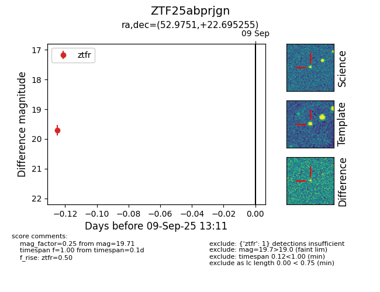

FINK: ZTF25abprjgn
Lasair: ZTF25abprjgn
ALeRCE: ZTF25abprjgn
ZTF25abprjgn (ztf,fink)
equatorial (ra, dec) = (52.9751,+22.69525)
galactic (l, b) = (164.7213,-26.87095)

last ztfr=19.71
1 ztfr detections